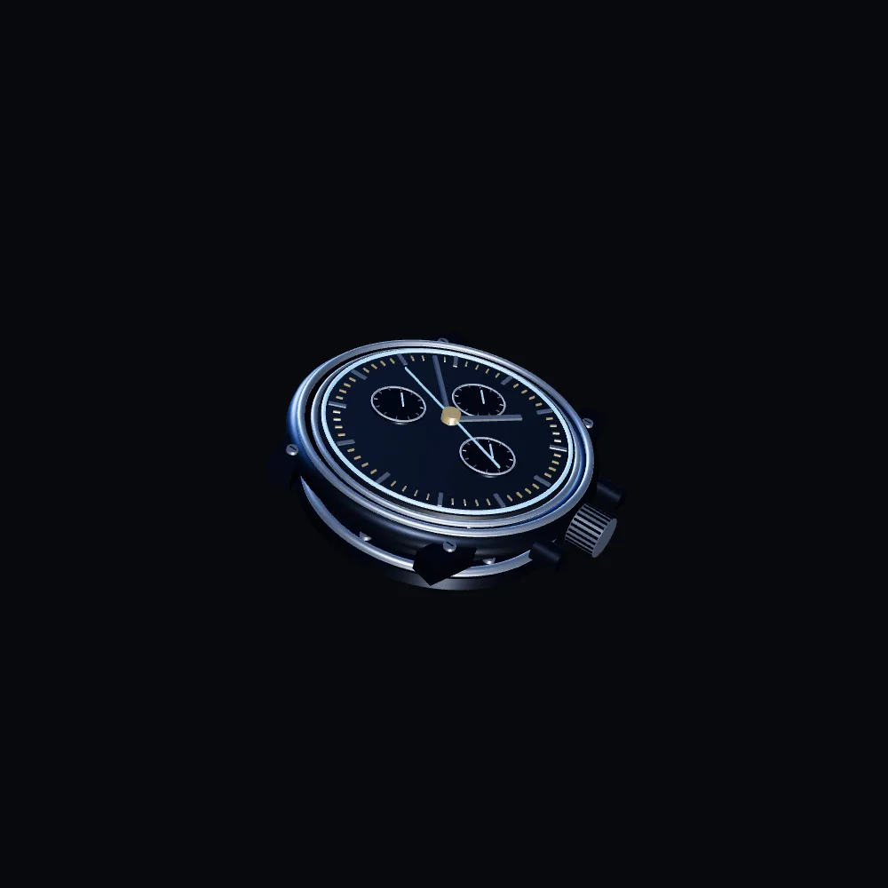

PROCEDURAL STUDY / NO. 01The outer architecture.
A sculpted case holds the whole. The crown reaches beyond it, the point where hand meets mechanism.
A fictional watch. A real curiosity.
Nothing here
works alone.
A crown winds a spring. A spring turns a train of gears. Bridges hold their positions. Hands give that invisible exchange a shape we can read.
This is an imagined chronograph, not a production calibre. Its disassembly is a study in the poetry of mechanical construction.
Put it back togetherHow this was made
Original, synthetic imagery. No photographs, generative image services or real watch specifications.
Following AI Chip Scroll-Animation Landing Page, shared by Lindsay Gonzales in the AI Web Design Library (guide 07; duplicate workflow in guide 13, shared by Rourke Sefton-Minns).
The workflow stays the same: assembled keyframe → exploded keyframe → cinematic transition → scroll-linked playback. Instead of sign-in-only Google Whisk and Flow, the watch is built from original Three.js geometry. Headless Edge renders 101 frames; ffmpeg encodes the image sequence and transition film. Scroll position selects a frame, so the movement follows your pace in either direction.


Reduced motion keeps the image still. Layer buttons remain available for deliberate, instant exploration. Typeface: Manrope, SIL Open Font License.